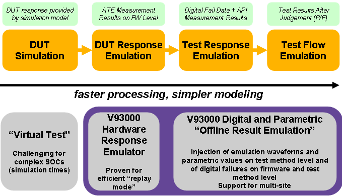

Pre-silicon and emulation workflow
The following figure shows the emulation workflow for pre-silicon and the emulation tools provided by Advantest (purple background):
- Hardware response emulation
For details on the hardware response emulator, see Hardware Response Emulator.
- Offline result emulation

Further use cases may be, for example, regression tests and test case development.
Functional changes
- Introduced in SmarTest 7.1.3